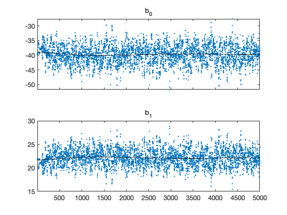
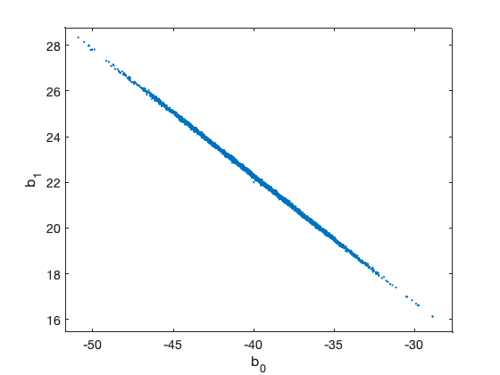
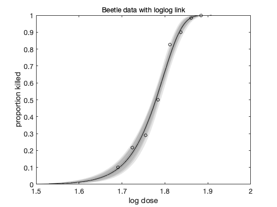

MCMC toolbox » Examples » Beetle
Beetle mortality data
From A. Dobson, An Introduction to Generalized Linear Models, Chapman & Hall/CRC, 2002. Binomial logistic regression example with dose-response data. See beetless.m for -2log(likelihood) function.
clear model data params options data = [ % dose n y 1.6907 59 6 1.7242 60 13 1.7552 62 18 1.7842 56 28 1.8113 63 52 1.8369 59 53 1.8610 62 61 1.8839 60 60 ]; global BEETLE_LINK BEETLE_LINK = 2; % 1=logit, 2=loglog, 3=probit % the "sum-of-squares" is now -2log(likelihood) of the binomial model model.ssfun = @beetless; % initial values and model function according to the link function switch BEETLE_LINK case 1 b = [ 60,-35]; % logit modelfun = @(d,th) 1./(1+exp(th(1)+th(2).*d)); label = 'Beetle data with logit link'; case 2 b = [-40, 22]; % logog modelfun = @(d,th) 1-exp(-exp(th(1)+th(2).*d)); label = 'Beetle data with loglog link'; case 3 b = [-35, 20]; % probit modelfun = @(d,th) nordf(th(1)+th(2).*d); label = 'Beetle data with probit link'; end % model parameters params = { {'b_0', b(1)} {'b_1', b(2)} }; options.nsimu = 5000; [res,chain] = mcmcrun(model,data,params, options); % plot the chain figure mcmcplot(chain,[],res) figure mcmcplot(chain,[],res,'pairs') % sample the predicted mean respose out = mcmcpred(res,chain,[],linspace(1.5,2)',modelfun,500); figure mcmcpredplot(out) hold on % add data points plot(data(:,1),data(:,3)./data(:,2),'ok') hold off title(label) ylabel('proportion killed') xlabel('log dose')
Sampling these parameters: name start [min,max] N(mu,s^2) b_0: -40 [-Inf,Inf] N(0,Inf) b_1: 22 [-Inf,Inf] N(0,Inf)  